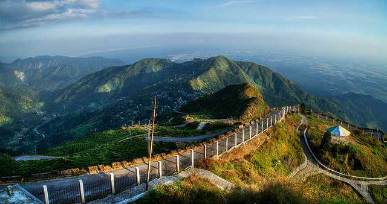

Darjeeling, West Bengal
Darjeeling has a recorded history from the early 19th century
Darjeeling is located at an elevation of 6,700 ft and is a main town of the Sadar subdivision
Darjeeling Himalayan Railway, 2ft guauge railway running between new Jalpaiguri and Darjeeling

Tea Plantation darjeeling. Darjeeling is also known as the champagne of teas
Tiger Hill - One of the highest railway station in Darjeeling
View at the Basil Top, Darjeeling